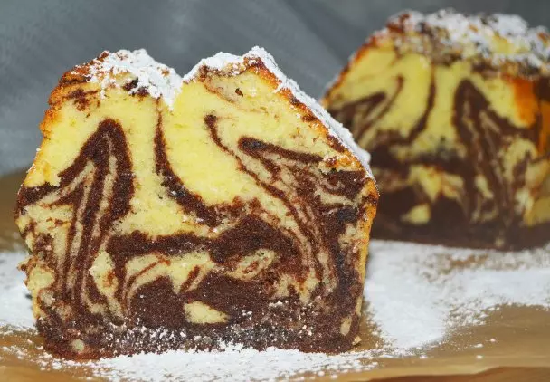
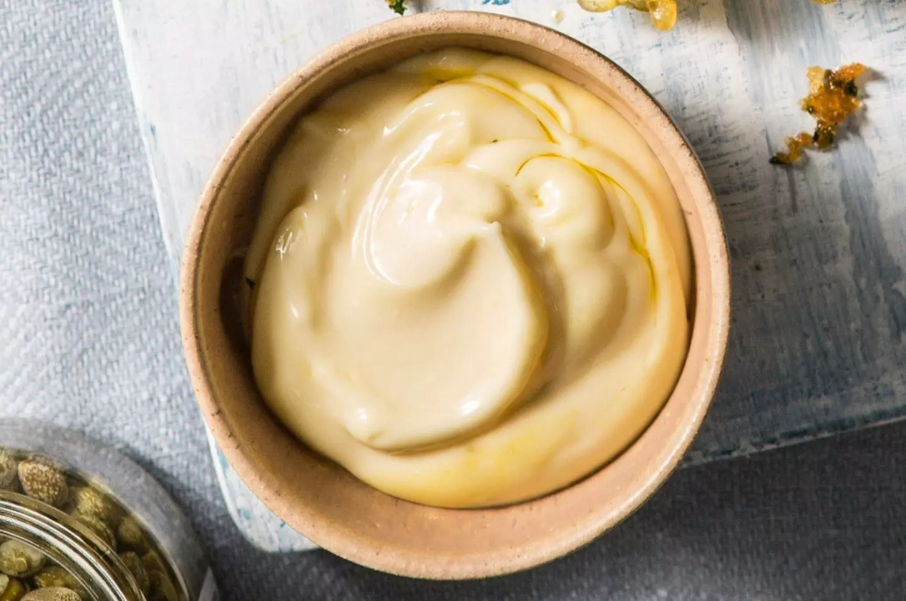
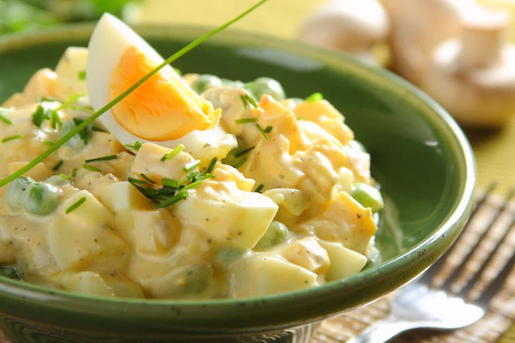

Wielkanocne przepisy

Babka marmurkowa
Zobacz przepis

Majonez
Zobacz przepis
Jajka z majonezem
Zobacz przepis

Sałatka jajeczna z pieczarkami
Zobacz przepis
×
Babka marmurkowa
Składniki:
cukier - 290 g
cukier wanilinowy - 8 g
jajko - 6 szt.
masło - 300 g
mąka pszenna - 300 g
kakao - 30 g
proszek do pieczenia - 16 g
sól - 1 szczypta
Przygotowanie:
Natłuść masłem formę do babki i oprósz ją mąką oraz rozgrzej piekarnik do 175°C.
Piekarnik rozgrzać do 175°C.
Do pojemnika miksującego włożyć pokrojone na kawałki miękkie masło, cukier, cukier waniliowy i 1 szczyptę soli.
Ucieraj składniki oraz dodaj jajka.
Mąkę zmieszaj z proszkiem do pieczenia, przesiej do masy maślanej w pojemniku
wyrabiaj, aż powstanie gładkie ciasto.
Zagarnij je łopatką ze ścianek na dno pojemnika i ponownie mieszaj.
Połowę ciasta przelej do przygotowanej formy. Do pozostałego dodaj kakao i zgarnij ciasto ze ścianek na dno pojemnika oraz pomieszaj.
Ciemne ciasto wylej na jasne w formie babkowej.
Aby uzyskać efekt marmurkowania, przeciągnij widelcem przez obie warstwy ciasta, rysując nim zawijasy.
Piecz babkę 1 godzinę.
Sprawdź patyczkiem, czy dobrze się upiekła. W razie potrzeby zostaw jeszcze kilka minut w piekarniku.
×
Majonez
Składniki:
żółtka – 3 szt.
musztarda Dijon – 1 łyżeczka
olej słonecznikowy – 150-200 ml
biały ocet winny – 1 łyżeczka
cukier – 1 szczypta
sól – 1 szczypta
Przygotowanie:
Jajka zanurzamy w szklance z wrzątkiem na ok. 10 sekund.
Miskę ustawiamy na kilku arkuszach ręcznika papierowego, by była stabilna.
Sparzone żółtka jaj przekładamy do miski i delikatnie podbijamy je za pomocą rózgi.
Dodajemy musztardę i ponownie ubijamy masę, by napowietrzyć bazę majonezu.
Stopniowo, cienkim strumieniem dolewamy olej, cały czas energicznie ubijając masę, aż stanie się gęsta i gładka.
Dodajemy ocet, cukier i sól. Mieszamy. Jeśli masa rozrzedzi się po dodaniu octu, dodajemy kolejną porcję oleju i ponownie ubijamy majonez.
Gotowy majonez przekładamy do zamykanego słoiczka. Przechowujemy w lodówce.
×
Jajka z majonezem
Składniki:
jaja - 10 szt.
kawior czarny lub czerwony – 2 łyżki
koperek gałązki do dekoracji
Majonez - 4 łyżki
Przygotowanie:
Jaja ugotuj na twardo nie dłużej niż przez 8 minut.
Następnie ostudź je, obierz i przekrój na pół. Połówki jajek ułóż na talerzu lub półmisku.
Majonez dekoracyjnie nałóż na każdą połówkę jajka.
Gotowe jaja udekoruj kilkoma ziarenkami kawioru oraz małą gałązką koperku.
×
Sałatka jajeczna z pieczarkami
Składniki:
jaja - 8 szt.
pieczrki – 100 gramów
woda - 2 łyżki
groszek zielony - 100 gramów
szczypioerek - 1 pęczek
ser żółty - 100 gramów
jogurt naturalny - 15 gramów
majonez - 1 łyżka
pieprz czarny mielony - 1 szczypta
bulion warzywny - 1 szt.
Przygotowanie:
Jaja ugotuj na twardo nie dłużej niż przez 8 minut.
Następnie ostudź je, obierz i przekrój na pół. Połówki jajek ułóż na talerzu lub półmisku.
Majonez dekoracyjnie nałóż na każdą połówkę jajka.
Gotowe jaja udekoruj kilkoma ziarenkami kawioru oraz małą gałązką koperku.